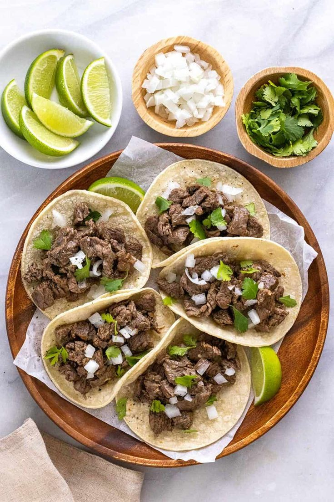

Tacos de carne

Descripción
Los tacos de carne son un plato tradicional de la cocina mexicana que destaca por su versatilidad.
Cada persona puede personalizarlos con diferentes salsas, vegetales y acompañamientos.
Son ideales para comidas rápidas o reuniones informales gracias a su preparación sencilla y su gran
variedad de sabores.
Ingredientes
- 8 tortillas de maíz
- 500 g de carne de res en tiras
- 1 cebolla
- 1 tomate
- Cilantro fresco
- Jugo de un limón
- Sal
- Pimienta
- Comino
- Salsa picante (opcional)
Pasos
- Sazonar la carne.
- Cocinar la carne en una sartén caliente.
- Calentar las tortillas.
- Picar el tomate, la cebolla y el cilantro.
- Colocar la carne sobre las tortillas.
- Agregar los vegetales.
- Añadir limón y salsa al gusto.
- Servir inmediatamente.
Página Principal